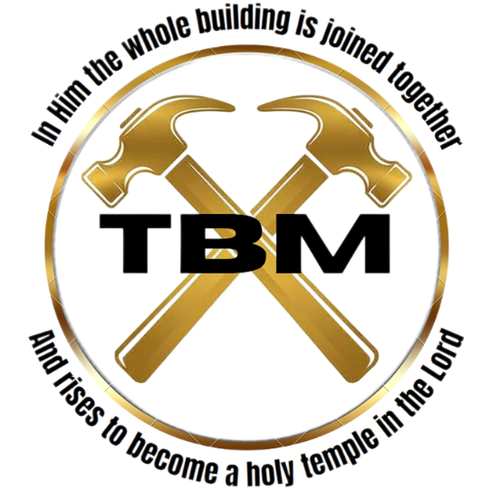

Thank you for this opportunity to introduce The Builders Ministry. We are a 501(c)3 nonprofit ministry founded by Reverend Roger S. Smith of Milwaukee, WI.
We are fully dependent on the Holy Spirit for guidance, empowerment, wisdom, and transformation in every aspect of ministry. We are committed to proclaiming the unchanging truth of God’s Word and the gospel of Jesus Christ, believing that Scripture—not culture, opinion, or pressure—defines our message and mission.
We teach and model God’s grace that leads to wholeness, freedom, healing, and spiritual growth, calling the Church to faith, action, renewal, and revival. We equip believers to walk confidently in their identity in Christ, to live out their God-given authority, and to fulfill their kingdom calling as we strengthen, unify, and build up the body of Christ. Guided by the Holy Spirit, we pursue Christ-centered relationships that bring hope and lasting transformation, walking in love, humility, holiness, righteousness, and compassion.
We disciple believers through biblical teaching, mentoring, and spiritual development, boldly proclaiming salvation and demonstrating Christ’s mercy through prayer, presence, and practical care. In all we do, we conduct ministry with honesty, integrity, transparency, faithfulness, and moral purity, intentionally speaking and acting in ways that encourage, uplift, and reflect the character and love of Jesus Christ.
“I pray out of his glorious riches he may strengthen you with power through his Spirit in your inner being, so Christ may dwell in your hearts through faith. And I pray that you being rooted and established in love, may have power, together with all the Lord’s holy people, to grasp how wide and long and high and deep is the love of Christ, and to know this love that surpasses knowledge - that you may be filled to the measure of all the fullness of God. Now to him who is able to do immeasurably more than all we ask or imagine, according to his power that is at work within us, to him, be glory in the church and in Christ Jesus throughout all generations, for ever and ever! Amen.”
- Ephesians 3:16-20
Our ministry is built upon the belief that we are all called to The Great Commission and what the prophet Isaiah said in Isaiah 61:1–3: "The Spirit of the Lord God is upon me, Because the Lord has anointed and commissioned me To bring good news to the humble and afflicted; He has sent me to bind up [the wounds of] the brokenhearted, To proclaim release [from confinement and condemnation] to the [physical and spiritual] captives And freedom to prisoners, To proclaim the favorable year of the Lord, And the day of vengeance and retribution of our God, To comfort all who mourn, To grant to those who mourn in Zion the following: To give them a turban instead of dust [on their heads, a sign of mourning], The oil of joy instead of mourning, The garment [expressive] of praise instead of a disheartened spirit. So they will be called the trees of righteousness [strong and magnificent, distinguished for integrity, justice, and right standing with God], The planting of the Lord, that He may be glorified."
We believe that the Bible is the infallible word of God. “All Scripture is God breathed and is used for teaching, rebuking, correcting, training in righteousness, so that the servant of God may be thoroughly equipped for every good work.” 2 Tim. 3:16-17 The Bible is the truth. “For prophecy never had its origin in the human will, but prophets, though human, spoke from God as they were carried along by the Holy Spirit.” 2 Pet. 1:21.
We believe in the Holy Trinity: God the Father, Jesus the Son and the Holy Spirit. Jesus was born of a virgin birth by the power of the Holy Spirit. Jesus lived on earth and was fully man and fully God. He bore our sins on the cross and was resurrected on the third day. He is alive! Jesus Christ is our salvation, the only way into the Kingdom of heaven.
We are saved only by God’s grace through our faith in Jesus Christ. “For it is by grace you have been saved, through faith - and this is not from yourself, it is the gift of God - not by works, so that no one can boast.” Eph. 2:8-9
We equip Christians with the full power of the gospel to ignite their faith and bring healing to the broken-hearted.
We envision a worldwide movement of Christians who boldly walk in the full authority of Christ with mercy, grace, and love.
“And he gave the apostles, the prophets, the evangelists, the shepherds and teachers, to equip the saints for the work of ministry, for building up the body of Christ, until we all attain to the unity of the faith and of the knowledge of the Son of God.”
– Ephesians 4:11-13
The Builders Ministry operates as a part of Midwest Education And Community Outreach (MEACO) 501(c)3, in partnership with Midwest Bible College of Milwaukee, Wisconsin. While separate ministries, these organizations are united by our shared mission in Christ to train and equip world-changers through the Word of God.